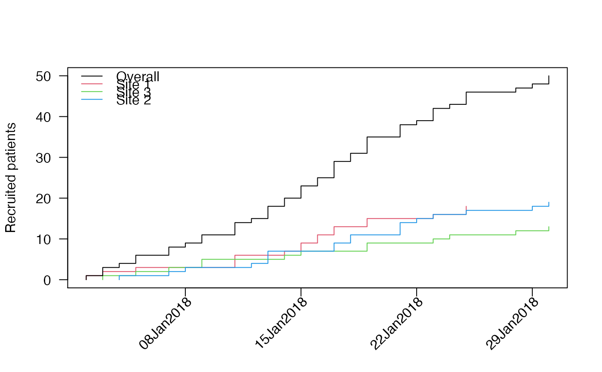
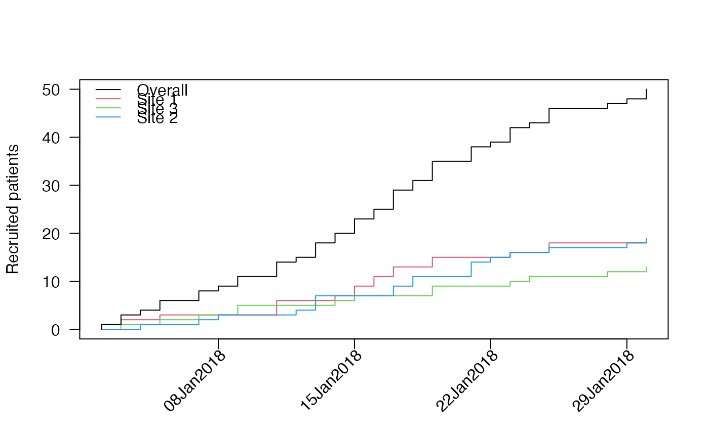
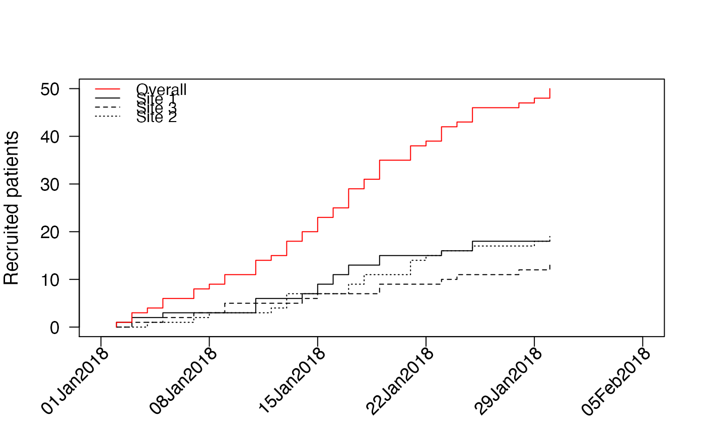
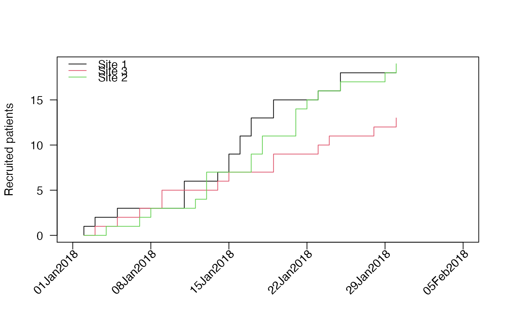
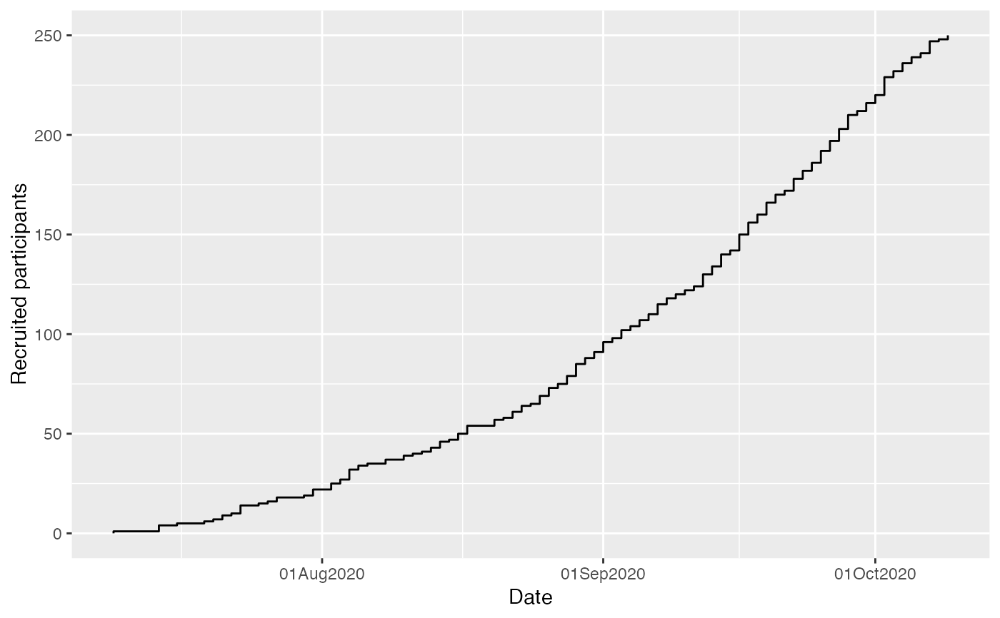
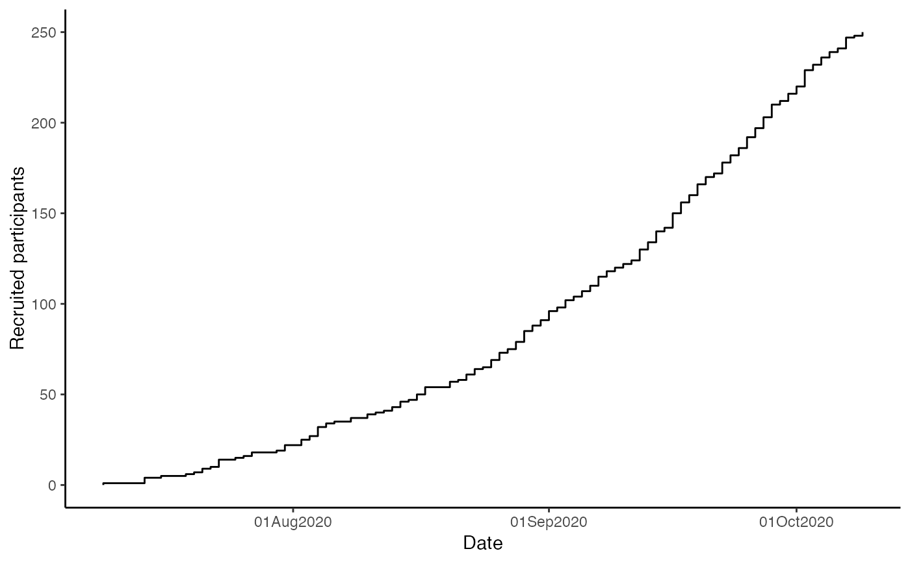
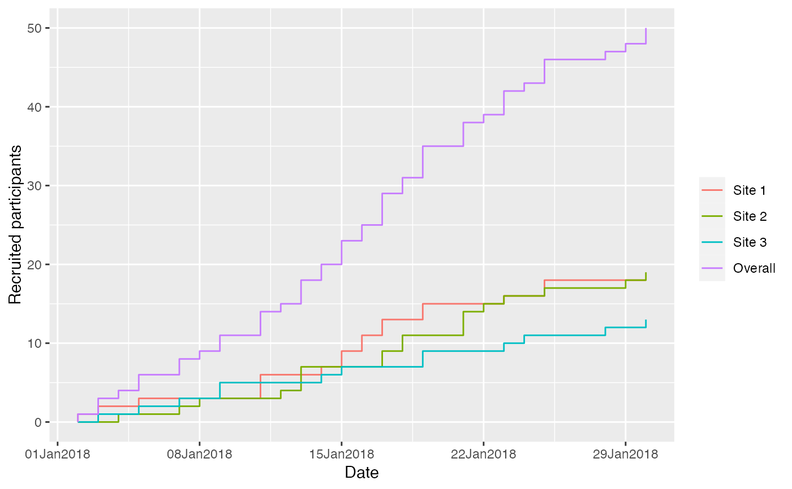
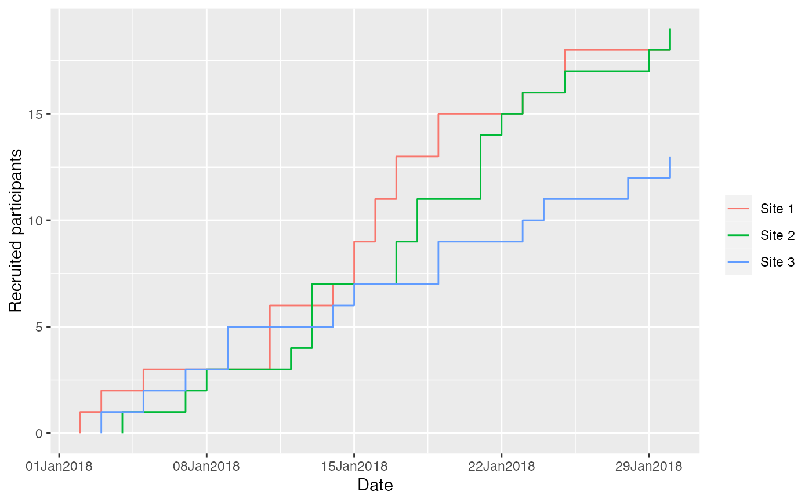

Plot of cumulative recruitment based on accrual data frame produced by accrual_create_df
accrual_plot_cum( accrual_df, ylim = NA, xlim = NA, ylab = "Recruited patients", xlabn = 5, xlabminn = xlabn%/%2, xlabformat = "%d%b%Y", xlabpos = NA, xlabsrt = 45, xlabadj = c(1, 1), xlabcex = 1, col = rep(1:8, 5), lty = rep(1:5, each = 8), legend.list = NULL, ... ) gg_accrual_plot_cum(accrual_df, xlabformat = "%d%b%Y")
Arguments
| accrual_df | accrual data frame produced by accrual_create_df potentially with by option (i.e. as a list) |
|---|---|
| ylim | limits for y-axis |
| xlim | limits for x-axis |
| ylab | y-axis label |
| xlabn | integer giving the desired number of intervals for the xlabel, default=5 |
| xlabminn | nonnegative integer giving the minimal number of intervals |
| xlabformat | format of date on x-axis |
| xlabpos | position of the x-label |
| xlabsrt | rotation of x-axis labels in degrees |
| xlabadj | adjustment of x-label, numeric vector with length 1 or 2 for different adjustment in x- and y-direction |
| xlabcex | size of x-axis label |
| col | color for line(s) in plot |
| lty | line types in plot |
| legend.list | named list with options passed to legend() |
| ... | further options passed to plot() and axis() |
Value
A plot of the cumulative accrual, optionally by site.
ggplot2 object
Examples
set.seed(2020) enrollment_dates <- as.Date("2018-01-01") + sort(sample(1:30, 50, replace=TRUE)) accrual_df<-accrual_create_df(enrollment_dates) accrual_plot_cum(accrual_df) accrual_plot_cum(accrual_df,cex.lab=1.2,cex.axis=1.1,xlabcex=1.1) #several sites set.seed(1) centers<-sample(c("Site 1","Site 2","Site 3"),length(enrollment_dates),replace=TRUE) accrual_df<-accrual_create_df(enrollment_dates,by=centers) accrual_plot_cum(accrual_df)  #assuming a common start and current date accrual_df<-accrual_create_df(enrollment_dates,by=centers,start_date="common",current_date="common") accrual_plot_cum(accrual_df)  #plot and legend options accrual_plot_cum(accrual_df,col=c("red",rep(1,3)),lty=c(1,1:3),cex.lab=1.2,cex.axis=1.1,xlabcex=1.1)  accrual_plot_cum(accrual_df,legend.list=list(ncol=2,bty=TRUE,cex=0.8))#without overall accrual_df<-accrual_create_df(enrollment_dates,by=centers,overall=FALSE) accrual_plot_cum(accrual_df)  ### ggplot2 approach set.seed(2020) enrollment_dates <- as.Date("2018-01-01") + sort(sample(1:30, 50, replace = TRUE)) accrual_df <- accrual_create_df(enrollment_dates) gg_accrual_plot_cum(accrual_df)  gg_accrual_plot_cum(accrual_df) + ggplot2::theme_classic()  #several sites set.seed(1) centers <- sample(c("Site 1", "Site 2", "Site 3"), length(enrollment_dates), replace = TRUE) accrual_df <- accrual_create_df(enrollment_dates, by = centers) gg_accrual_plot_cum(accrual_df)
#assuming a common start and current date accrual_df <- accrual_create_df( enrollment_dates, by = centers, start_date = "common", current_date = "common" ) gg_accrual_plot_cum(accrual_df)  #without overall accrual_df <- accrual_create_df(enrollment_dates, by = centers, overall = FALSE) gg_accrual_plot_cum(accrual_df) 